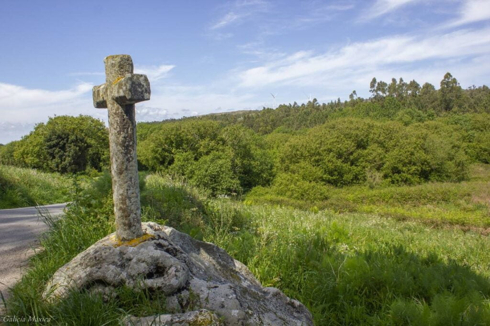
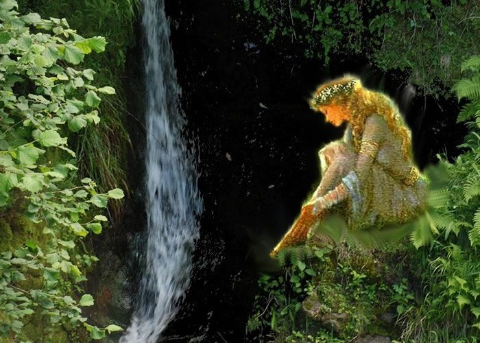

Lendas
A Moura do Monte das Croas



Ficha rápida da lenda
- Nome: A Moura do Monte das Croas
- Lugar: Castro das Croas, Salcedo (Pontevedra)
- Protagonista: Unha moura
- Que conta? A historia dunha moura que garda un tesouro e pon a proba a quen se cruza no seu camiño.
A lenda en si
Hai moitos seres da mitoloxía galega que me fascinan, e as mouras son, sen dúbida, un deles. Sempre me pareceron das figuras máis misteriosas. Na maioría das lendas aparecen como mulleres dunha beleza extraordinaria que viven en castros, covas ou montes, gardando tesouros e segredos que case nunca chegan a revelarse.
A primeira vez que escoitei falar da Moura do Monte das Croas foi sendo pequena. Salcedo queda aquí ao lado e sempre había alguén que coñecía a historia ou que aseguraba saber onde estaba o tesouro da moura. Daquela parecía unha desas lendas que todo o mundo coñece, pero que ninguén sabe contar igual.
Co paso dos anos souben que a historia estaba ligada ao Castro das Croas, un dos máis antigos de Pontevedra. A lenda conta que no interior do monte vivía unha moura nun palacio cheo de riquezas. De cando en vez aparecíase ás persoas que pasaban por alí, aínda que case todas fuxían dela por medo.
Un día, un rapaz que estaba coidando as ovellas atopouna sentada sobre unha pedra mentres se peiteaba cun peite de ouro. A moura pediulle un año, pero o rapaz, morto de medo, marchou correndo. Cando lle contou o sucedido ao seu pai, este obrigouno a volver para ofrecerlle á moura o año que ela quixese. Ao regresar, o rapaz descubriu que todo o rabaño desaparecera. Pouco despois a moura devolveulle as ovellas e pediulle que o pai fose falar con ela.
E aquí é onde a historia se volve máis misteriosa. Ninguén sabe o que a moura lle contou. A lenda nunca o revela. O único que di é que, desde aquel momento, aquel home e un amigo seu empezaron a prosperar coma ninguén. As colleitas eran as mellores da zona, nunca lles faltaba de nada e os veciños dicían que eran eles os encargados de levarlle alimento á moura.
Iso si, había unha condición: non contar nunca o segredo.
Co tempo, aquel home enfermou gravemente. A moura apareceu de novo e conseguiu curalo, pero advertiulle unha vez máis que non revelase o seu segredo. Finalmente acabou contándollo á súa muller e, ao día seguinte, apareceu morto, co corpo cuberto de marcas, como se alguén o golpease durante toda a noite.
Sempre me chamou a atención que a lenda nunca conte cal era ese segredo. Creo que esa é precisamente a súa forza. Hai historias que funcionan mellor cando deixan preguntas sen responder.
E, ao final, iso tamén é o que máis me gusta das mouras. Nunca sabes se están para axudar, se son malas ou boas, para poñer a proba ás persoas ou simplemente lembrarnos que hai misterios que non necesitan explicación e que nunca van ser resoltos.
Bibliografía
De Pontevedra, C. (2024, 21 junio). Lenda da Moura do Monte das Croas - Patrimonio histórico.
https://patrimoniohistorico.pontevedra.gal/salcedo-no-tempo/lenda-da-moura-do-monte-das-croas/
Máxica, G. (2019, 2 octubre). Castro das Croas de Salcedo. Galicia Máxica.
https://www.galiciamaxica.eu/galicia/castro-das-croas-de-salcedo/